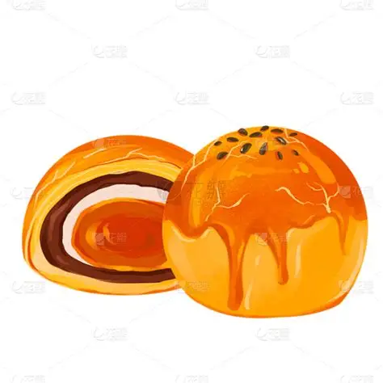

Egg yolk pastry (蛋黄酥, dàn huáng sū) is a beloved Chinese pastry featuring a golden salted egg yolk wrapped in sweet red bean paste, encased in dozens of paper-thin flaky layers. Each bite is a perfect balance of salty, sweet, and buttery — a masterpiece of Chinese baking.